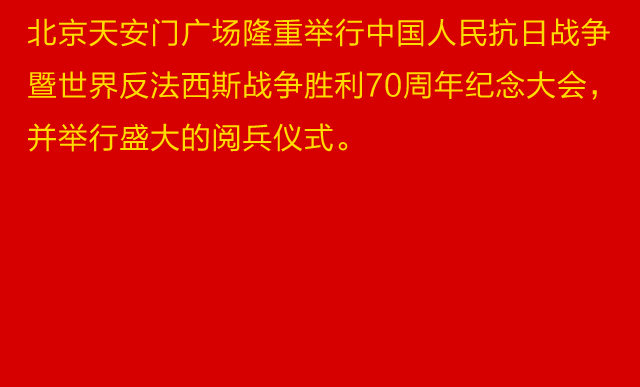

<!DOCTYPE html>
<html>
<head lang="en">
    <meta charset="UTF-8">
    <meta content="IE=edge,chrome=1" http-equiv="x-ua-compatible">
    <meta content="width=device-width, initial-scale=1.0, maximum-scale=1.0, user-scalable=0" name="viewport">
    <meta content="yes" name="apple-touch-fullscreen">
    <meta content="yes" name="apple-mobile-web-app-capable">
    <meta content="telephone=no" name="format-detection">
    <title>抗战胜利70周年大阅兵</title>
    <style>
        * {
            margin: 0;
            padding: 0;
            box-sizing: border-box;
        }

        body {
            background: #d70000;
            font-family: "Microsoft YaHei", tahoma, arial, 'Hiragino Sans GB', '\5b8b\4f53', sans-serif, Helvetica;
            font-weight: normal;
            line-height: 1.6;
            color: #333;
            font-size: 12px;
            -webkit-tap-highlight-color: rgba(0, 0, 0, 0);
            -webkit-appearance: none;
        }

        a, a:link, a:visited {
            color: #666;
            text-decoration: none;
        }

        a:hover, a:active {
            cursor: pointer;
        }

        a:focus {
            outline: medium none;
        }

        img {
            max-width: 100%;
        }

        .victory {
            margin: 0 auto;
            max-width: 640px;
            min-width: 320px;
            min-height: 504px;
            width: 100%;
            height: auto;
        }

        .victory img {
            display: block;
        }

        .victory-body {
            padding: 0 12px;
        }

    </style>
</head>
<body>
<div class="victory">
    <header>
        
    </header>
    <div class="victory-body">
        <a href="#"></a>
    </div>
    <footer>
        
    </footer>
</div>

<script>
    //判断访问终端
    var browser = {
        versions: function () {
            var u = navigator.userAgent, app = navigator.appVersion;
            return {
                mobile: !!u.match(/AppleWebKit.*Mobile.*/), //是否为移动终端
                ios: !!u.match(/\(i[^;]+;( U;)? CPU.+Mac OS X/), //ios终端
                android: u.indexOf('Android') > -1 || u.indexOf('Linux') > -1, //android终端或者uc浏览器
                iPhone: u.indexOf('iPhone') > -1, //是否为iPhone或者QQHD浏览器
                iPad: u.indexOf('iPad') > -1, //是否iPad
                webApp: u.indexOf('Safari') == -1 //是否web应该程序，没有头部与底部
            };
        }()
    };

    //判断是否移动端
    if (browser.versions.mobile && browser.versions.ios) { //ios
        alert('ios');
    } else if (browser.versions.mobile && browser.versions.android) { //android
        alert('android');
    }

</script>

</body>
</html>
